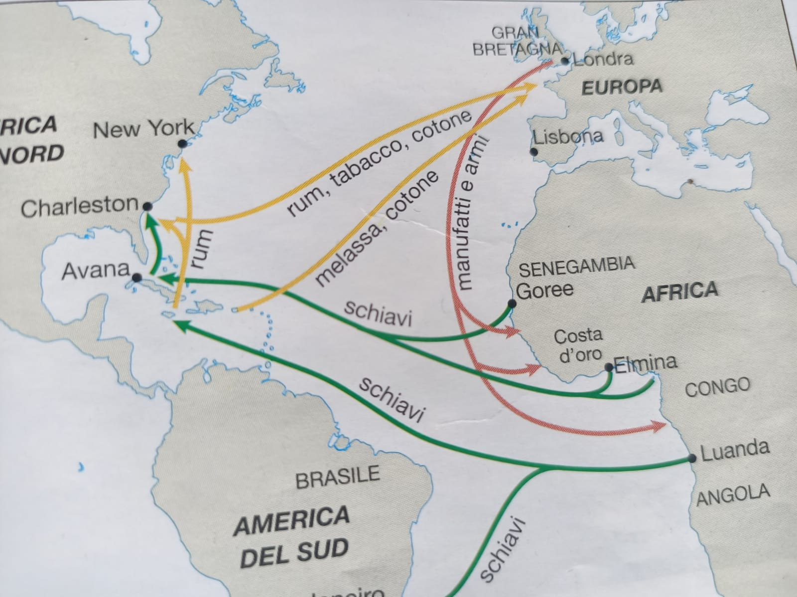

🌍 Disuguaglianze tra Giovani
Un percorso multidisciplinare per comprendere le cause delle disuguaglianze e sviluppare consapevolezza critica
Collegato agli Obiettivi Agenda 2030: Goal 4 (Istruzione), Goal 8 (Lavoro Dignitoso), Goal 10 (Ridurre le Disuguaglianze)
📚 Benvenuto nel Learning Object
Questo percorso didattico multidisciplinare esplora le disuguaglianze che colpiscono i giovani in tutto il mondo. Scoprirai come economia, geografia, storia e diritto si intrecciano per creare e perpetuare Far continuare qualcosa nel tempo, spesso una situazione negativa come una disuguaglianza. le disparità Differenze ingiuste tra persone o gruppi. di opportunità.
🎯 Obiettivi di Apprendimento
- Comprendere le cause storiche, economiche e sociali delle disuguaglianze
- Analizzare dati e indicatori che misurano le disuguaglianze globali
- Collegare i principi costituzionali ai problemi contemporanei
- Proporre soluzioni concrete basate su Agenda 2030
📊 Cosa Scoprirai
💰 Economia
Curva di Lorenz, Indice di Gini, distribuzione della ricchezza e disuguaglianze economiche globali.
🗺️ Geografia
Divario Nord-Sud, Indice di Sviluppo Umano (HDI), accesso all'istruzione e lavoro per i giovani.
📖 Storia
Rivoluzione Francese, abolizione della schiavitù, movimento per i diritti civili e lotte per l'uguaglianza.
⚖️ Diritto
Articoli 3 e 34 della Costituzione, diritti umani, uguaglianza sostanziale e protezione legale.
🌍 Agenda 2030
Approfondisci: clicca su un obiettivo per visitare il sito ufficiale e scoprire i traguardi dell’Agenda 2030 collegati a questo percorso.

💰 Economia: Misurare le Disuguaglianze
Non tutti i paesi partono dalla stessa posizione. Risorse, reddito e opportunità sono distribuiti in modo profondamente disuguale tra le nazioni. Scopri come gli economisti misurano queste disuguaglianze.
📈 Indice di Gini
L' Indice di Gini Misura quanto il reddito è distribuito in modo diseguale in una popolazione. è una misura statistica che valuta quanto è diseguale la distribuzione del reddito (o della ricchezza) all'interno di una popolazione. Va da 0 (uguaglianza perfetta) a 100 (massima diseguaglianza).
📊 Curva di Lorenz
La Curva di Lorenz Grafico che rappresenta come il reddito è distribuito tra le persone. mostra graficamente come il reddito è distribuito in una popolazione. Più la curva si allontana dalla diagonale, maggiore è la diseguaglianza all'interno di quella popolazione.
🎮 Attività interattiva
Metti alla prova le tue conoscenze su Gini e Lorenz partecipando al quiz interattivo.
🌐 Cause delle Disuguaglianze Economiche
- Elevato indebitamento dei paesi in via di sviluppo
- Basso livello di istruzione e accesso limitato al lavoro qualificato
- Sfruttamento delle risorse naturali
- Crisi economiche e instabilità politica
- Accesso ineguale al capitale e ai finanziamenti
💡 Attività Interattiva
Simulazione Budget: Immagina di essere un ministro dell'economia di un paese emergente. Hai un budget limitato per investire in occupazione giovanile. Come lo distribuiresti tra:
- Formazione professionale
- Incentivi alle imprese
- Infrastrutture digitali
- Programmi di supporto ai giovani imprenditori
🗺️ Geografia: Il Divario Globale
Le opportunità per i giovani non sono distribuite equamente nel mondo. Scopri come la geografia influenza l'accesso all'istruzione, al lavoro e alle risorse,e aiuta a comprendere il divario Differenza significativa tra due realtà, per esempio tra paesi ricchi e poveri. globale.
🌍 Indice di Sviluppo Umano 🌍
L' Indice di Sviluppo Umano (HDI) Indicatore che valuta lo sviluppo di un paese considerando salute, istruzione e reddito. misura il livello di sviluppo di un paese considerando tre dimensioni: speranza di vita, istruzione e reddito pro capite. Permette di confrontare paesi molto diversi tra loro.
📊 Disoccupazione Giovanile per Regione
La disoccupazione giovanile varia significativamente tra le regioni. In alcune aree del Sud Europa è molto alta, mentre nei paesi del Nord Europa è più contenuta.
🎓 Accesso all'Istruzione
- Europa e Asia Orientale: La maggioranza dei giovani completa la scuola superiore
- Africa subsahariana e Asia meridionale: Molti ragazzi non terminano il ciclo di studi
- Cause principali (UNESCO): Povertà, distanza geografica dalle scuole, conflitti
🎮 Attività interattiva
Analisi Continentale: Scegli un continente e analizza:
- Livello medio di istruzione
- Principali ostacoli all'istruzione
- Possibili soluzioni
💡 Scansiona il QR code per partecipare da smartphone
📖 Storia: Lotte per l'Uguaglianza
La storia ci insegna che l'uguaglianza è il risultato di lotte, idee e azioni collettive. Scopri come le società hanno affrontato le disuguaglianze nel corso del tempo.
📍 La Rivoluzione Francese (1789)
La Rivoluzione francese esplode nel 1789 in un contesto di grave crisi economica, sociale e politica. a società dell'Antico Regime era divisa in tre ordini: clero, nobiltà e Terzo Stato.
- Cause: Crisi finanziaria, sistema fiscale ingiusto, influenza delle idee illuministiche si riferisce all'Illuminismo, movimento culturale del XVIII secolo che valorizzava la ragione, la libertà e i diritti dell’uomo.
- Eventi chiave: Presa della Bastiglia (14 luglio 1789), Dichiarazione dei diritti dell'uomo e del cittadino
- Risultato: Fine dell' assolutismo
Sistema politico in cui il potere è concentrato nelle mani del sovrano.
, affermazione della sovranità popolare e dell' uguaglianza giuridica
Principio secondo cui tutti i cittadini sono uguali davanti alla legge, senza privilegi.
Questo evento è fondamentale nella lotta contro le disuguaglianze perché rompe il principio secondo cui il potere e i diritti dipendono dalla nascita. Non conta più appartenere a un ordine privilegiato: almeno in teoria, tutti i cittadini devono essere uguali davanti alla legge.
La rivoluzione non portò subito uguaglianza per tutti. Le donne, ad esempio, restarono escluse dalla piena cittadinanza politica.
⛓️ L'Abolizione della Schiavitù
La schiavitù moderna fu uno dei sistemi più violenti e disumani della storia. Tra il XVI e il XIX secolo, milioni di africani furono deportati verso le Americhe.
- Commercio triangolare: Europa → Africa → Americhe
- Abolizione: XIII emendamento USA (1865)
- Lezione: Abolire la schiavitù non eliminò automaticamente il razzismo
Il commercio triangolare collegava Europa, Africa e Americhe attraverso uno scambio di merci e persone, includendo la tratta degli schiavi.

Schema del commercio triangolare tra Europa, Africa e Americhe.
🤝 Il Movimento per i Diritti Civili
Nonostante la fine della schiavitù, negli Stati Uniti del Novecento la popolazione afroamericana continuava a subire forti discriminazioni.
- 1955: Rosa Parks si rifiuta di cedere il posto sull'autobus
- 1963: Marcia su Washington, discorso "I Have a Dream" di Martin Luther King Jr.
- 1964: Civil Rights Act - vieta la discriminazione negli spazi pubblici e nel lavoro
- 1965: Voting Rights Act - garantisce il diritto di voto agli afroamericani
💡 Lezione Storica
La lotta per l'uguaglianza è un processo lungo e non ancora concluso. L'azione collettiva nonviolenta può modificare la società e le leggi, esattamente come ci ricorda l'Agenda 2030.
⚖️ Diritto: La Legge come Strumento di Uguaglianza
Il diritto non è solo un insieme di regole, ma uno strumento per proteggere i più deboli e garantire pari opportunità a tutti.
📚La Costituzione Italiana
La nostra Costituzione è nata dalla Resistenza e pone l'uguaglianza come valore fondamentale.
- Articolo 3: Tutti i cittadini hanno pari dignità sociale e sono eguali davanti alla legge, senza distinzione di sesso, di razza, di lingua, di religione, di opinioni politiche, di condizioni personali e sociali.
- Articolo 34: La scuola è aperta a tutti. L'istruzione inferiore, impartita per almeno otto anni, è obbligatoria e gratuita.
- Articolo 36: Ogni lavoratore ha diritto a una paga proporzionata e sufficiente per una vita libera e dignitosa. Un baluardo contro il lavoro povero, che colpisce i giovani in modo sproporzionato.
- Articolo 37: Tutela il lavoro delle donne e dei minori, stabilendo la parità di diritti e di retribuzione a parità di mansione. È il fondamento di tutta la legislazione sulla parità di genere.
La Costituzione italiana è il fondamento dei diritti e dei doveri dei cittadini. Puoi leggerla direttamente sul sito ufficiale del Quirinale.
Attività: cerca e leggi i seguenti articoli:
- Articolo 3 – Uguaglianza
- Articolo 34 – Diritto all’istruzione
- Articolo 36 – Diritto a una retribuzione dignitosa
- Articolo 37 – Tutela del lavoro femminile
Riflessione: quale di questi articoli ti sembra più importante per ridurre le disuguaglianze? Perché?
🌍 Dichiarazione Universale dei Diritti Umani (1948)
Approvata dall'ONU dopo la Seconda Guerra Mondiale, stabilisce che tutti gli esseri umani nascono liberi ed eguali in dignità e diritti.
💡 Riflessione Giuridica
L' uguaglianza formale Tutti sono uguali davanti alla legge. non basta se non c'è l' uguaglianza sostanziale Lo Stato interviene per ridurre le disuguaglianze reali.
✅ Metti alla Prova le tue Conoscenze
Hai risposto correttamente a 0 domande su 4.